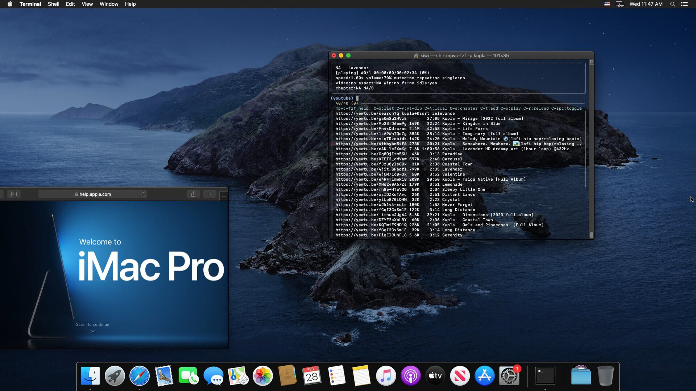
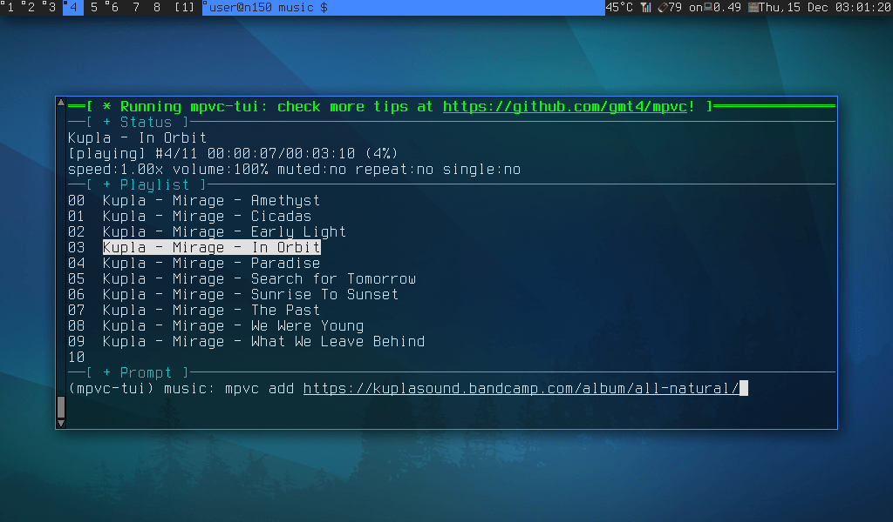
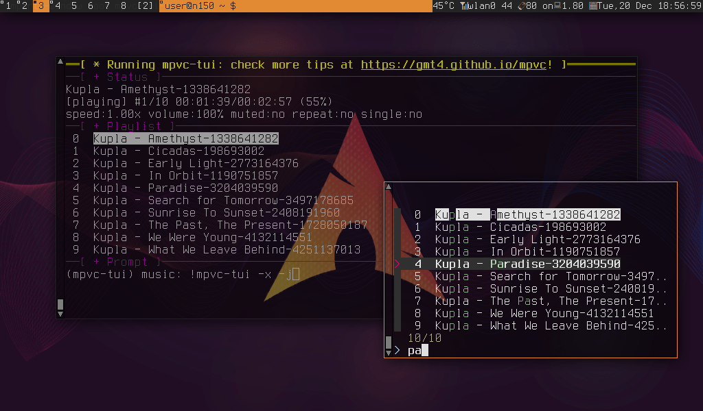
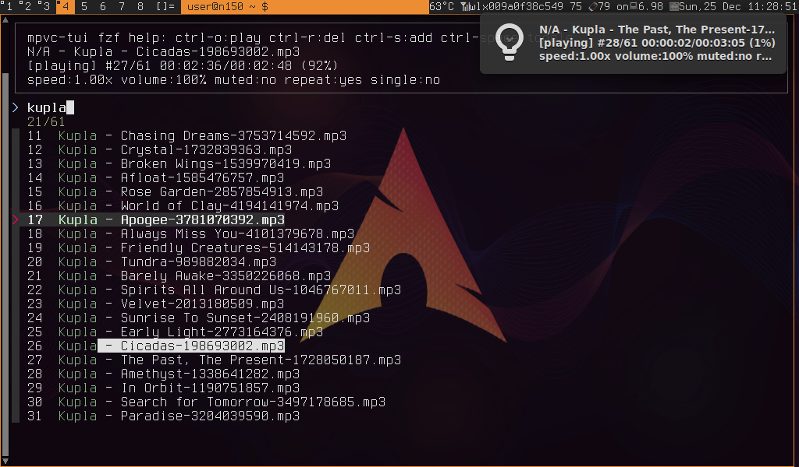

🎧 mpvc
- about Music player in POSIX-sh using mpv from the shell/fzf + extras/goodies 📡🛸🚀
- goodies Support TUI, FZF, WEB, CLI, playing youtube & streaming services (See #20221219)
- tags music-player terminal minimal mpv tui media-player mplayer posix-sh mpv-player mpvc mpvc-tui
- github https://github.com/gmt4/mpvc/
- promote Star, share, and promote our work through the buttons below if you find it useful. Thanks!
ToC
Overview
An elegant, lightweight, mpc-like command-line and web controller for the mpv media player, built on POSIX shell scripts and Unix sockets.
___
⠀⠀⠀⠀⠀⠀⢀⣤⠖⠂⠉⠉⠉⠀⠒⠤⣀⠀⠀⠀⠀⠀ ____ _/ (_)___ ______⠀⠀⠀⠀⠀
⠀⠀⠀⠀⢀⠀⣶⡟⢀⣴⣶⣿⣾⣶⣶⣄⡀⠈⠑⢤⡀⠀⠀ / __ `/ / / __ `/ ___/⠀⠀⠀⠀⠀
⠀⠀⠀⡴⣫⣼⡿⣴⡟⠛⠉⠉⠛⠛⠿⣿⣿⣷⣦⡀⠙⢄⠀ / /_/ / / / /_/ (__ ) ⠀⠀⠀⠀⠀
⠀⠀⣼⢁⣟⡟⣷⠁⠀⠀⠀⠀⠀⠀⠀⠀⠙⢿⣿⣷⣆⠈⢣ \__,_/_/_/\__,_/____/ ⡀⠀⠀⠀⠀
⠀⢰⣿⢼⣿⣷⠇⠀⠀⠀⠀⠀⠀⠀⠀⠀⠀⠀⠹⣿⣿⡆⠀⢱⠀⠀
⠀⢸⡵⣾⣇⣸⠀⠀⠀⠀⠀⠀⠀⠀⠀⠀⠀⠀⠀⠘⣿⣧⠀⠀⢧⠀⠀⠀ ____ ___ ____ _ __ _____
⠀⠘⣴⣿⢯⡏⠀⠀⠀⠀⠀⠀⠀⠀⠀⠀⠀⠀⠀⠀⠹⡿⠛⠉⠹⡆⠀⠀ / __ `__ \/ __ \ | / / / ___/
⢀⣼⣿⣧⠟⠁⢀⢀⣀⡀⠀⠀⠀⠀⠀⠀⠀⠀⠀⠀⠀⢯⣴⣶⣴⡇⠀⠀⠀ / / / / / / /_/ / |/ / / /__
⢸⣿⣼⣿⣋⣉⠀⠀⠀⠈⠙⠦⡀⠀⠀⠀⠀⠀⠀⠀⠀⠈⣿⣿⣷⣷⡀⠀⠀ /_/ /_/ /_/ .___/|___/ \___/
⢸⠁⠊⣿⠛⢛⢟⣦⡀⠀⠀⠀⠈⢆⠀⠀⠀⠀⢀⠔⣨⣶⡜⠂⠈⠽⣧⡀⠀ /_/ ⠀
⠸⣶⣾⡯⠤⢄⡀⠵⢿⣦⡀⠀⠀⠀⡷⡄⠀⡰⢁⣾⣿⣿⣿⠀⠀⠀⣿⡹⡄ ____ ___ ____ _ __ __ _____/ /_ ⠀
⠀⣿⣡⠦⢄⡀⠈⠳⣬⣹⣿⣆⠀⠀⢉⠻⣴⠇⣾⣿⡟⢻⠁⠀⠀⠀⣿⠁⡇ / __ `__ \/ __ \ | / / __/ /_ / ___/ __ \⠀
⠀⣿⡭⡀⠀⠈⠲⣦⣸⣿⣿⣿⣧⣀⠈⡔⣜⣴⣿⡟⢀⡎⡈⠀⠀⢰⡿⢠⣷ ⠀ / / / / / / /_/ / |/ / /_ __/ (__ ) / / /⠀
⠀⢸⣿⣄⣒⡀⡀⣿⣷⡿⣿⢿⣿⣷⡰⡸⣯⣏⣿⡷⢋⣼⣁⡢⢠⠟⠀⣼⣿ /_/ /_/ /_/ .___/|___/ /_/ /____/_/ /_/
⠀⠀⠻⣷⣈⣁⣮⢻⢸⡇⢨⣿⣿⣿⣷⢶⣿⣏⣩⣶⣿⣿⣿⣿⡯⣤⣴⣿⠃ /_/
⠀⠀⠀⠘⠿⣿⣿⣽⣽⣷⣿⣿⣿⣿⣿⡶⠻⣿⣿⣿⣿⣿⣿⣿⣿⣿⠟⠁⠀ (mpvc, where mpv meets the shell)
⠀⠀⠀⠀⠀⠀⠉⠙⠿⢿⣿⣿⣿⣿⠟⠁⠀⠘⠿⣿⣿⣿⠿⠟⠉⠀⠀⠀⠀
Installation
The mpvc-installer quickstart automated install runs strictly in user-space (no sudo/root access). If you ever want to remove it, it leaves no messy traces, just do mpvc-installer quickstart-rm.
curl -fsSLO https://github.com/gmt4/mpvc/raw/master/extras/mpvc-installer;
# take your time to review the mpvc-installer for peace-of-mind
BINDIR=$HOME/bin SHELL=/bin/sh $SHELL ./mpvc-installer quickstart
Prefer using package managers like Homebrew, Nix, Pkg, Gentoo, BSD or the Arch AUR? See the Detailed Installation steps in docs/README.md.
Quickstart Guide
Note you can use m/mx instead of mpvc/mpvc-fzf when typing on the CLI, these are setup by mpvc-installer.
1. Base Player Controls (mpvc)
mpvc add https://somafm.com/lush130.pls # Start playing SomaFM lush
mpvc pause # Pause playback
mpvc play 0 # Play playlist entry 0
mpvc vol 30 # Set volume to 30%
mpvc next # Play next track in the playlist
mpvc toggle # Toggle playback state (play/pause)
mpvc togglev # Toggle video playback state (on/off)
mpvc togglei # Toggle idle playback state (once/always/off)
find ~/Music -name "*.mp3" | mpvc load # Pipe local directories into the active queue
2. Interactive Search Controls (mpvc-fzf)
mpvc-fzf -f # Launch fzf to visually manage your current playlist queue
mpvc-fzf -p 'query' # Search on Invidious/YouTube and stream matching audio
mpvc-fzf --rp # Instantly search and play live RadioParadise audio feeds
mpvc-fzf --lofi # Instantly search and play live Lo-Fi audio feeds
mpvc-fzf --somafm # Browse and stream live background channels from SomaFM
3. Web Browser Control (mpvc-web)
mpvc-web -c start # Start, and open `http://localhost:8888` in your browser
mpvc-web -c start -s1 # Start, and open `https://localhost:8443` in your browser
For more check the Log Book (remember your best chance is to try, play, and have fun).
Screenshots
mpvc-fzf running on mac OS (screenshot click to view)

mpvc-tui -T: running the mpvc TUI (screenshot click to view)

mpvc-tui -f: running with fzf (screenshot click to view)

mpvc-tui: running with fzf and desktop notifications on the upper-right corner (screenshot click to view)

Documentation
Documentation can be found in the repo, man pages, FAQ, README, and dev log: